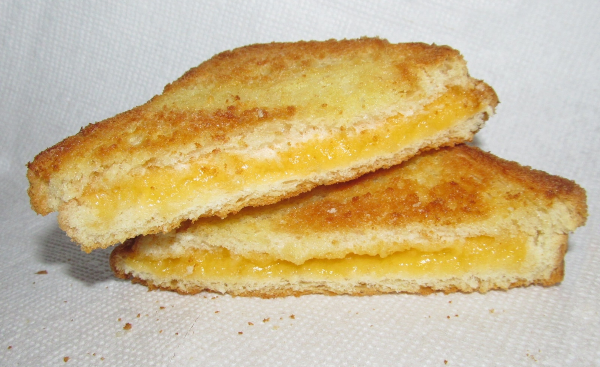

Classic Grilled Cheese Sandwich

Instructions
Butter the Bread
Spread softened butter evenly on one side of each bread slice, making sure to cover all the way to the edges. This ensures even browning and prevents sticking.
Assemble the Sandwich
Place one slice of bread butter-side down on a plate. Layer the cheese slices on top. If using optional seasonings, sprinkle them on the cheese. Top with the second bread slice, butter-side up.
Cook Low and Slow
Heat a skillet or griddle over medium-low heat. Place the sandwich in the pan and cook for 3-4 minutes without moving it, until the bottom is golden brown and crispy. Press down gently with a spatula.
Flip and Finish
Carefully flip the sandwich and cook the other side for 3-4 minutes until golden brown and the cheese is fully melted. If the cheese needs more time to melt, reduce heat to low and cover the pan for 1-2 minutes. Remove from heat, let rest for 1 minute, slice diagonally, and serve immediately.